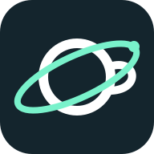

01 / Black + white
SVG ↓
For single-color print, stamps, and photocopies. Shown at up to 430 px wide.
Fictional brand / gaming cafe
Coffee, games, and good company. Orbit brings them together with a planet-shaped cup and a ring that keeps things moving.
Original vector identity
01 / Logo family
The cup forms the letter O. A diagonal orbit connects the name to exploration, while the handle grounds it in cafe culture.
For single-color print, stamps, and photocopies. Shown at up to 430 px wide.
Charcoal and teal for light backgrounds. Use in menus, signage, and website headers.
White and mint for dark surfaces. Preserve contrast and use the supplied colors.

Shown at 64 px; used in this browser tab. The dark tile stays visible in light and dark browser themes.
02 / Usage
Use the horizontal lockup when the name matters. Switch to the icon for square or compact spaces.
Download standalone icon ↓Leave one satellite diameter of empty space around the logo. Keep text and other graphics outside that space.
Full lockup: 220 px on screen or 45 mm in print. Icon: 32 px. Favicon: 16, 32, or 48 px.
Scale uniformly. Keep the original orientation and colors; avoid shadows, outlines, distortion, and busy backgrounds.
03 / Palette
Charcoal
#14252DOrbit teal
#007F78Mint
#79F2CBWarm white
#F5F3EB04 / Process + files
Twelve digital concept studies explore coffee, gaming, space, typography, and community. The final direction combines the planet cup and orbit.
The concept PDF is digitally drawn. It is not a scan of hand-drawn work.